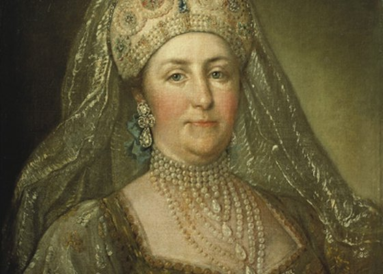
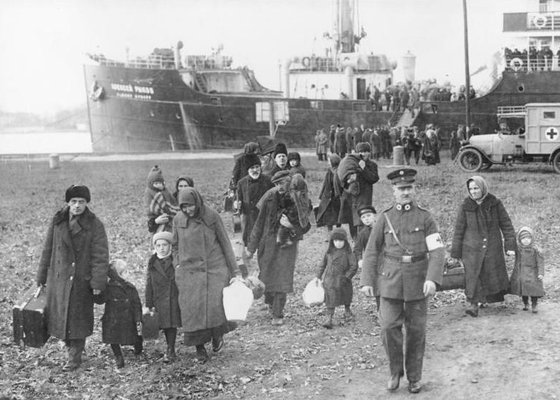
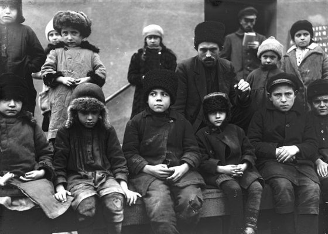
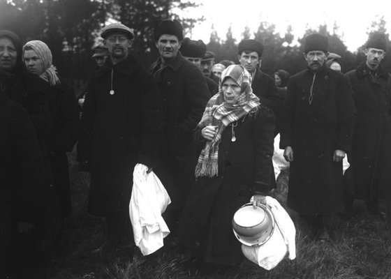
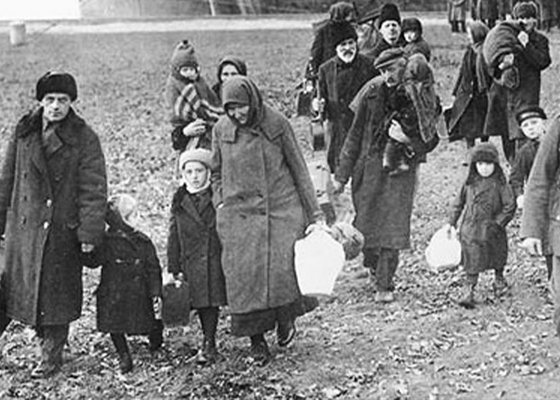

„Ich finde was 1941 verloren ging."
Mit Stalins Erlass vom 28. August 1941 wurden die Wolgadeutschen innerhalb von Tagen nach Sibirien und Kasachstan deportiert. Familien wurden getrennt, Männer in die Trudarmee verschickt, Kirchenbücher verbrannt, Heimatdörfer aufgelöst.
Was viele heute über ihre Familie wissen, endet bei den Großeltern. Davor — Schweigen. Genau dort beginnt meine Arbeit.
Mein Name ist Edwin Karl. Meine eigene Familie stammt aus dem Dorf Lauwe / Jablonowka im Saratower Gebiet, einer Kolonie die 1767 gegründet wurde, vier Jahre nach Katharinas Manifest.
Die Geschichte, die meine Kunden erleben, kenne ich persönlich: das Schweigen der Großeltern, die fehlenden Namen, der Faden der 1941 abriss. Ich habe meine eigene Linie zurückverfolgt — bis ins Jahr 1640 nach Hessen.
Genau diese Recherchearbeit mache ich für Sie. Ich arbeite mit veröffentlichten Siedler- und Einwandererlisten, Koloniechroniken, historischen Karten und Gedenkbüchern zu Deportation und Trudarmee. Für viele Familiennamen verzeichnen diese Quellen sogar den Herkunftsort in Deutschland vor der Auswanderung.
„Sie wissen wer Ihre Großeltern waren. Ich finde heraus, wer davor war."
Erstberatung kostenlos — ich sage Ihnen vorab ehrlich, was möglich ist und was die Quellen hergeben.
Sie schreiben mir per E-Mail. Ich schätze unverbindlich ein, was sich zu Ihren Familiennamen und Herkunftsorten herausfinden lässt.
Sie geben mir alle bekannten Namen, Orte und Daten, die in Ihrer Familie noch erinnert werden — jedes Detail kann der Schlüssel sein.
Veröffentlichte Siedler- und Einwandererlisten, Koloniechroniken, historische Karten, Gedenkbücher: Ich arbeite die zugänglichen Quellen gründlich und nachvollziehbar ab.
Sie erhalten ein ausführlich gestaltetes PDF: Herkunft, Kolonie, Geschichte, je nach Paket mit Karte und Zeitleiste. Druckfertig und zum Teilen mit der Familie.
Beginnen Sie mit der Geschichte hinter einem Namen, oder lassen Sie die Wege Ihrer ganzen Familie erzählen: von der Auswanderung aus Deutschland bis nach Sibirien.
Herkunft, Kolonie und Geschichte als gestaltetes PDF.
Jetzt bestellen · 39 € Per WhatsApp anfragenDie ganze Familiengeschichte erzählt, mit Karte und Zeitleiste.
Jetzt bestellen · 69 € Per WhatsApp anfragenUnsicher, welches Paket passt? Schreiben Sie mir Ihren Nachnamen. Die Ersteinschätzung ist kostenlos.
Auch als Geschenk: Auf Wunsch stelle ich den Bericht auf den Namen des Beschenkten aus — zum runden Geburtstag, zu Weihnachten oder einfach so.
Sie suchen konkrete Vorfahren mit Namen, Daten und Dokumenten? Für einzelne Familien übernehme ich eine individuelle Tiefenrecherche in digital zugänglichen Quellen wie veröffentlichten Siedlerlisten, digitalisierten Kirchenbüchern und Gedenkbüchern. Ab 149 € — Umfang und Preis nach kostenlosem Erstgespräch, denn jede Familie ist anders. Keine Archivanfragen nach Russland; gefunden wird, was die zugänglichen Quellen hergeben, und ich sage Ihnen vorab ehrlich, wo die Grenzen liegen.
Erstgespräch anfragen →




Die Fragen, die mir am häufigsten gestellt werden. Ehrlich beantwortet, denn genau davon lebt diese Arbeit.
Ausschließlich publizierte und damit überprüfbare Quellen: die Einwanderungslisten 1764–1767 (Igor Pleve), die Revisionsliste von 1798 (Brent Mai), die Auswanderungslisten von Karl Stumpp, Koloniechroniken, Ortslexika und die dokumentierten Bestände der Fachportale. Für viele Familiennamen verzeichnen diese Quellen sogar den Herkunftsort in Deutschland vor der Auswanderung.
Nicht in den Paketen — und das sage ich lieber vorab, als es zu behaupten. Herkunftsbericht und Familiengeschichte sind Kontextrecherche aus publizierten Quellen. Recherche in digitalisierten Kirchenbüchern und weiteren zugänglichen Beständen ist Teil der individuellen Tiefenrecherche. Archivanfragen nach Russland übernehme ich nicht.
Ja. Jede zentrale Aussage im Bericht trägt eine Quellenziffer, am Ende steht das vollständige Quellenverzeichnis. Was sich nicht eindeutig belegen lässt, ist als Einschätzung gekennzeichnet. Sie sehen also immer, was Quelle ist und was Einordnung. Genau so aufgebaut sind auch die Beispiel-PDFs bei den Paketen.
Nein, aus Datenschutzgründen bewusst nicht. Die dargestellten Personen sind frei gestaltet und mit * gekennzeichnet. Alle Angaben zu Kolonien, Familiennamen und historischen Ereignissen darin sind dagegen echt und belegt. Aufbau, Umfang und Quellenarbeit entsprechen exakt einem beauftragten Bericht.
Das kläre ich, bevor Sie zahlen: Die Ersteinschätzung ist kostenlos, und ich sage Ihnen ehrlich, was möglich ist und was nicht. Gibt eine beauftragte Recherche weniger her als zugesagt, erstatte ich anteilig.
Ja. Die Familiengeschichte deckt bis zu vier Nachnamen ab, jeder weitere kostet 15 € zusätzlich. Bei sehr vielen Linien lohnt oft der Blick, welche vier den Kern Ihrer Familie ausmachen — auch dazu berate ich kostenlos.
Erste Einschätzung kostenlos und unverbindlich. Antwort auf Deutsch, Russisch oder Englisch — meist innerhalb von 24 Stunden.
Sie bestellen einen digitalen Inhalt. Vor der Zahlung bestätigen Sie bitte den sofortigen Bearbeitungsbeginn.
Weiter zur Zahlung →Mit „Weiter zur Zahlung" akzeptieren Sie die AGB und die Widerrufsbelehrung. Es gilt die Datenschutzerklärung.